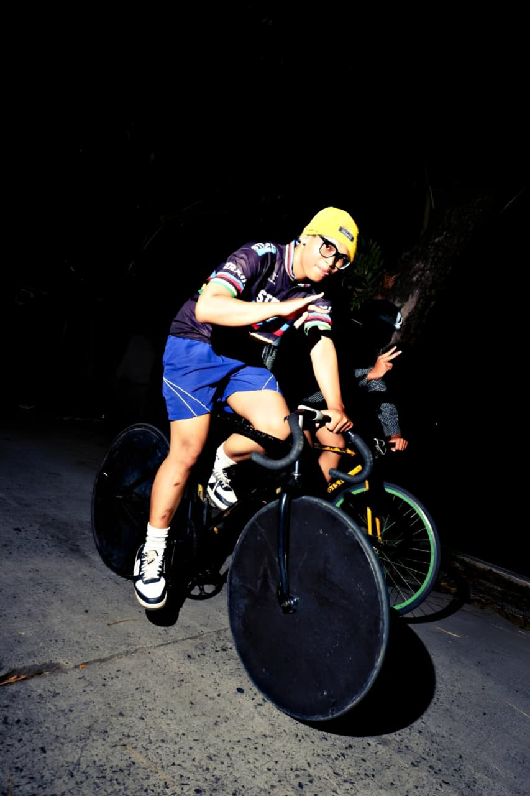
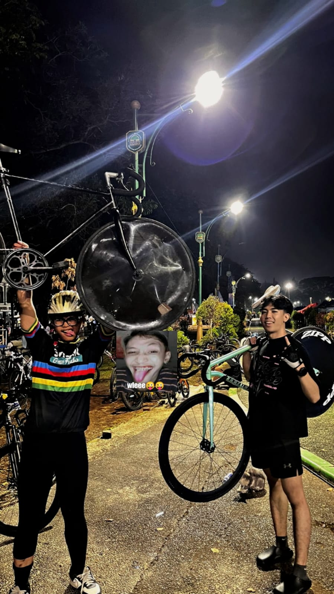
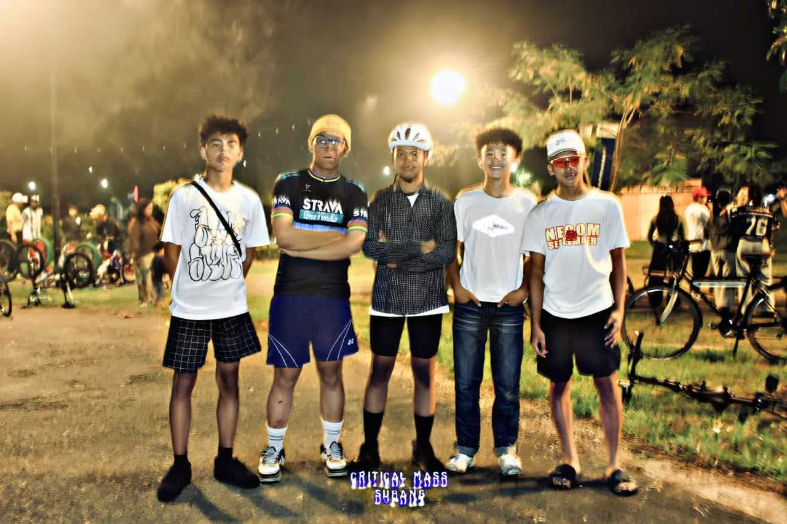
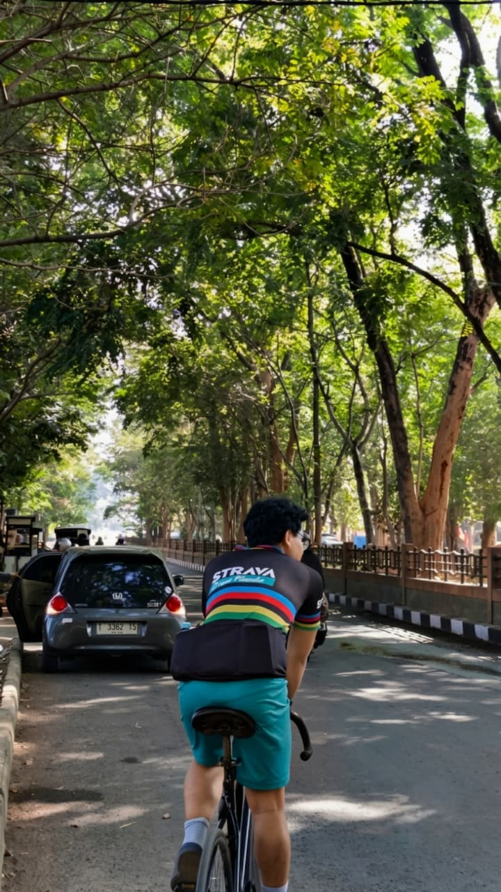
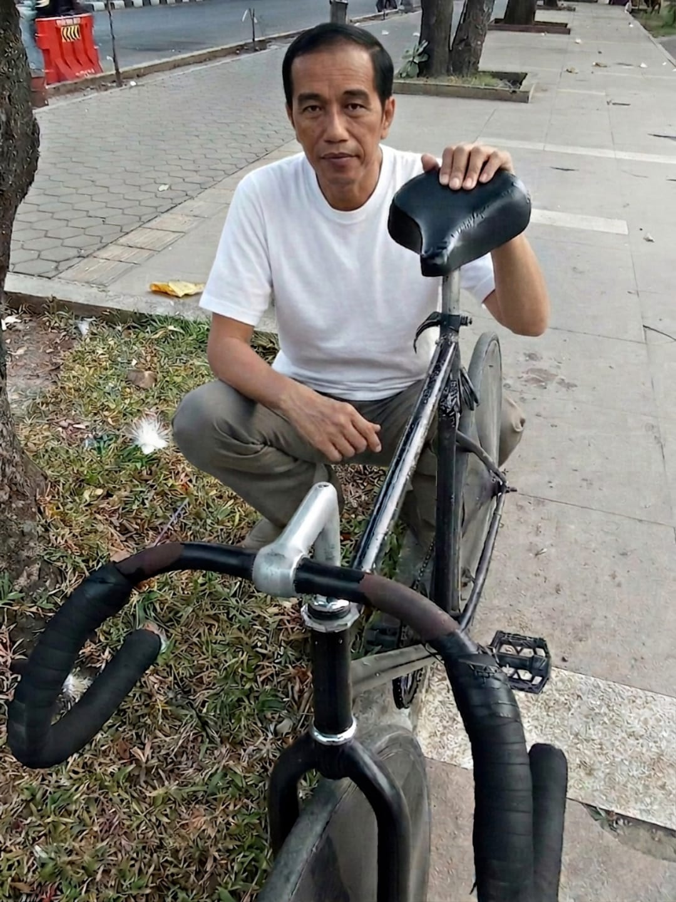
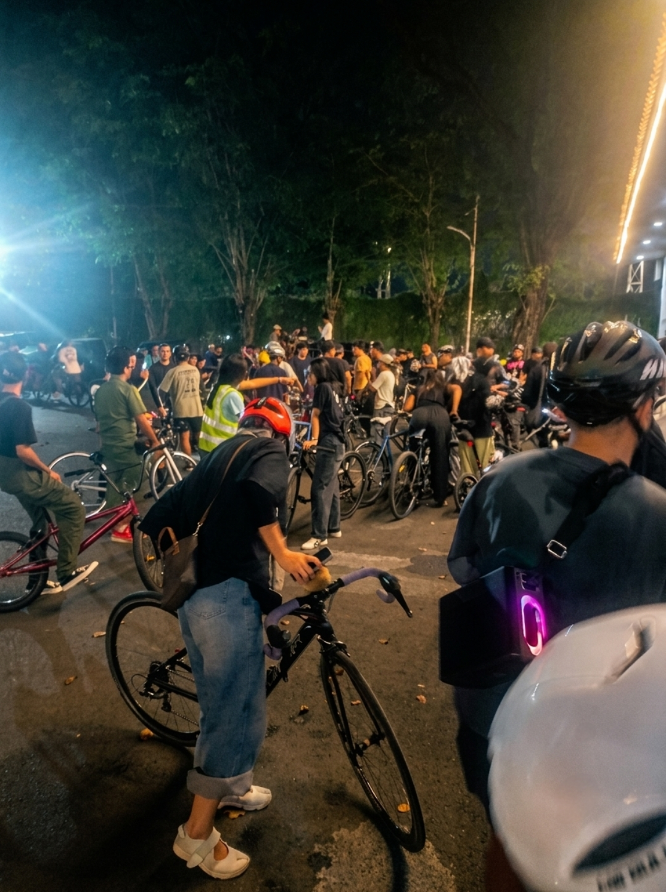
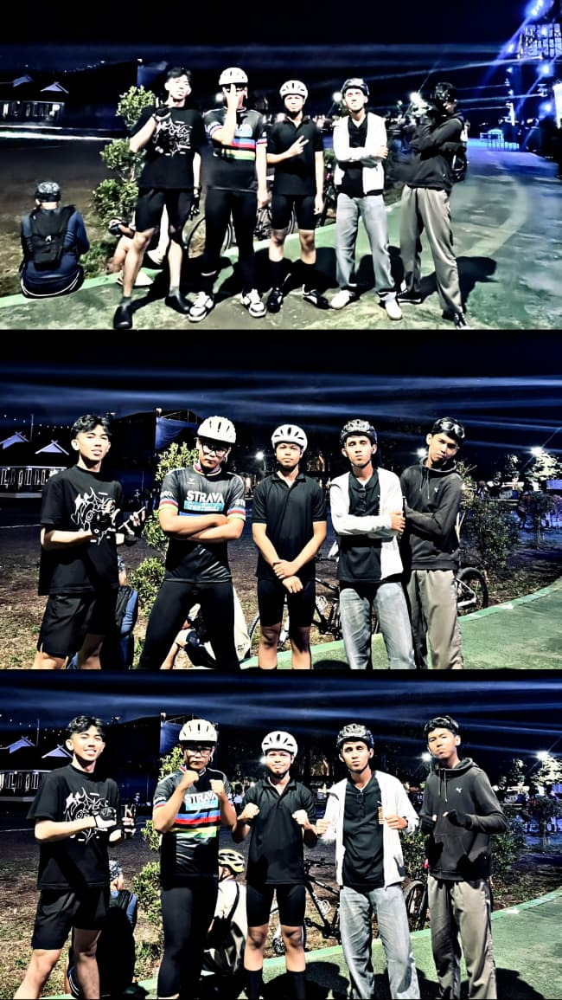
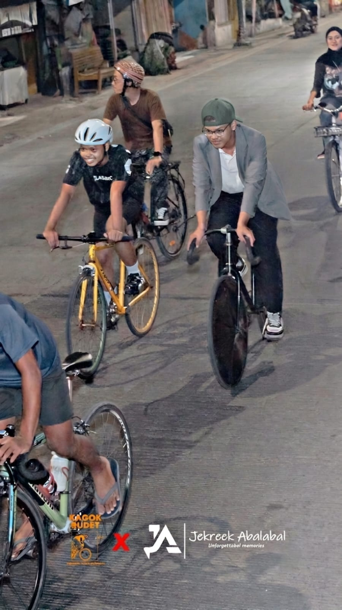

Track Race Night
Sesi balap sprint 200m di velodrome outdoor tiap Jumat. Brakeless, pure leg power.
Komunitas sepeda fixed gear dan velodrome outdoor di Subang — tempat sharing per-sepedaan, balap track race, dan ngopi bareng setelah senja turun.


Sesi balap sprint 200m di velodrome outdoor tiap Jumat. Brakeless, pure leg power.

Rute santai 25km dari velodrome ke bukit senja, ngopi, lalu balik bareng-bareng.

Sharing bareng tentang gear ratio, crank length, chain tension, dan cara setup fixed gear yang pas.

Belajar servis sepeda sendiri: clean chain, ganti ban, set hub, sampai true-ning pelek.

Latihan sprint dan standing start. Cocok buat yang mau ikut balap.

Sesi santai bahas pengalaman balap, tips tricks, dan cerita per-sepedaan bareng senior crew.
Fixed gear, atau sering disebut fixie, adalah jenis sepeda dengan roda gigi tunggal yang langsung terhubung ke roda belakang — tanpa freewheel. Artinya, selama sepeda bergerak, pedal juga ikut berputar.
| Istilah | Arti / Penjelasan | Kategori | Wajib? | Tingkat |
|---|---|---|---|---|
| Fixed Gear | Sepeda single-speed, roda gigi terkunci ke rear hub — pedal mutus terus selama jalan. | Tipe sepeda | Inti komunitas | Dasar |
| No Coasting | Ngga bisa manggut pedal — kalo roda muter, pedal juga muter. Latih control kaki sebelum mulai. | Karakteristik | Wajib dipahami | Dasar |
| Brakeless | Tanpa rem mekanik. Berhenti pakai teknik skid stop — kunci pedal balik arah. | Gaya ride | Opsional | Lanjut |
| Gear Ratio | Perbandingan gigi depan vs belakang (contoh 48x15). Makin besar, makin berat tapi kencang. | Setup | Wajib dipilih | Dasar |
| Velodrome | Lintasan berbentuk oval dengan tikungan miring untuk balap track. Tempat kami latihan resmi. | Lokasi | Tempat kumpul | Lanjut |
| Track Stand | Berdiri di atas sepeda tanpa turun, seimbangkan pedal. Latih balance sebelum balap sprint. | Skill | Opsional | Lanjut |
| Komunitas ini open buat semua level — dari yang baru tau fixed gear sampai yang sudah sering balap track. Nggak ada biaya bulanan, cukup ikut event. | ||||
Catatan: Buat yang baru pertama kali, kami sarankan datang ke Ngopi & Sharing Minggu pertama dulu — biar kenalan sama senior crew sebelum mulai naik bareng.

Komunitas khusus fixed gear — single speed, no coasting, pure connection sama sepeda.
Semua sepedah fixed gear di harapkan bisa mengikuti sprint drag race dan — semua bisa diuji di sini.
Bukan cuma bareng balap. Tiap Minggu ada sesi sharing pengalaman, tips build, dan cerita per-sepedaan dari senior.
Saya Mahesya Jibril, founder sekaligus track marshal di VeloBike. Ini cerita singkat & beberapa foto pribadi saya.
Nama saya Mahesya Jibril, biasa dipanggil Sya. Saya mahasiswa Sistem Informasi di Universitas Subang dan pendiri VeloBike sejak awal 2026.
VeloBike lahir dari hobi saya naik fixed gear dan kecintaan sama balap track. Saya percaya bahwa setiap bersepedah punya cerita — dan cerita itu paling enak dibagi pas senja turun di kota buat sprint.
Selain ngurusin crew, saya juga content creator seputar sepeda di waktu senggang dan senang belajar hal baru soal setup sepeda dan teknologi web.
"Abang blm pernah kalah sprint nih di subang."
"Kami cepat tetapi wajib safety🔥🚴 --- And salam 2 pedal."
"Aku akan menjadi Itachari pertama di Subang!."
Mau tanya soal komunitas fixed gear, mau datang ke track night, atau sekedar kenalan dulu? Isi form ini — crew kami akan balas via WhatsApp / email dalam 1×24 jam.